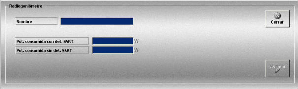

Radiogoniómetro
La creación y edición de radiogoniómetros se realiza mediante la siguiente ventana.

Esta ventana permite definir los equipos Radiogoniómetros que podrán ser añadidos a las unidades participantes en los Ejercicios.
Para cada Radiogoniómetro se definen los siguientes datos:
Nombre: Nombre del equipo.
Formato: caracteres alfanuméricos.
Pot. consumida con det. SART: Potencia consumida por el equipo cuando hay detecciones SART.
Unidades: vatios
Rango: 0.0 - 1000.0
Pot. consumida sin det. SART: Potencia consumida por el equipo cuando no hay detecciones SART.
Unidades: vatios
Rango: 0.0 - 1000.0
Si la unidad dispone de baterías, la potencia consumida por el radiogoniómetro se tiene en cuenta para evaluar el tiempo que las baterías pueden alimentar a los diferentes equipos de comunicación de que dispone una unidad.